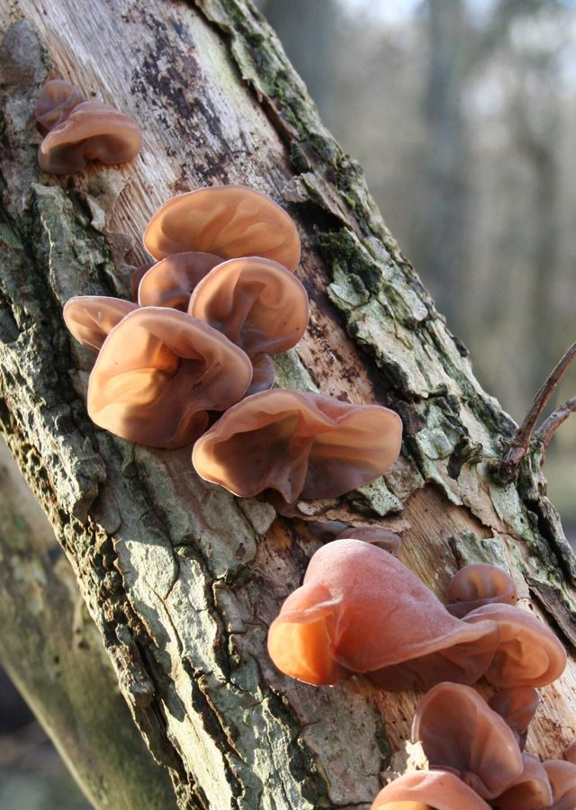

कान की खुम्बीWood Ear Fungus
Auricularia auricula-judae · Auriculariaceae · FNG-0013

- Scientific name
- Auricularia auricula-judae (Bull.) Quél.
- Family
- Auriculariaceae
- Hindi
- कान की खुम्बी
- Status here
- native
- IUCN
- not evaluated
When to look कब देखें
Expected mainly in June, July, August, September.
कान की खुम्बी / Wood Ear Fungus
Auricularia auricula-judae (Bull.) Quél. — Auriculariaceae
कान की खुम्बी (वुड इयर / जेली इयर / कान मशरूम) — पूर्वी उत्तर प्रदेश के पुराने बागों (orchards), जंगलों की सड़ी हुई लकड़ियों और नमी वाले पेड़ों के तनों पर मानसून के मौसम (June to September) में उगने वाला एक बहुत ही आम, जेली जैसा लचीला और कान के आकार का ब्रैकेट कवक (gelatinous cup fungus) है। इसकी सबसे बड़ी पहचान इसका इंसानी कान जैसा मुड़ा हुआ आकार (ear-shaped concave lobes) और गहरा लाल-भूरा या धूसर-भूरा रंग है। यह छूने पर रबर या जेली जैसा महसूस होता है, और धूप में सूखने पर एकदम कड़ा और काला हो जाता है, लेकिन बारिश का पानी पड़ते ही यह दोबारा फूलकर अपनी जेली जैसी कोमल अवस्था में लौट आता है। यह एशिया में ओईस्टर (Oyster) मशरूम के बाद सबसे ज्यादा उगाया और खाया जाने वाला खाद्य मशरूम (edible mushroom) है, जिसका उपयोग चीनी व्यंजनों (जैसे हॉट एंड सोर सूप) में इसके अनोखे कुरकुरे स्वाद (crunchy texture) के लिए किया जाता है। इसे पहचानते समय जंगली जेली कवक के साथ विभेदन आवश्यक है।
Quick Identification त्वरित पहचान
| Feature | Description |
|---|---|
| Fruit body | Ear-shaped, wavy-lobed, cup-like, concave on the inner side and convex on the outer side, 3–10 cm wide |
| Texture | Gelatinous, rubbery, elastic, semi-translucent when wet; drying hard and shriveled, expanding back when wet |
| Color | Dark reddish-brown to purplish-brown, turning dark brown or blackish when dry |
| Outer surface | Dull, covered in a very fine, dense layer of greyish, velvety microscopic hairs |
| Inner surface | Smooth, glossy, wavy, often showing vein-like ridges resembling the folds of an ear |
Field tip: Look on dead mango branches after a heavy July rainstorm. Search for soft, floppy brown ears sticking out of the bark. Touch them; they will feel squishy and rubbery. If they are dried and black, pour water on them; watch them swell back into soft brown ears.
Morphology आकारिकी
Biometrics (typical measurements of mature fruit bodies in the northern Indian plains):
| Measurement | Range |
|---|---|
| Cap width | 3.0–10.0 cm |
| Cap thickness | 1.5–3.0 mm |
| Spore print color | white |
| Spore size | 13–15 × 5–6 µm |
Structure: Fruit body grows directly from the wood (sessile) or has a very short, lateral stem-like attachment.
Sterile Surface: The outer surface is wrinkled and has short, colorless hairs under a lens.
Fertile Surface (Hymenium): The smooth inner surface is where the microscopic spores are produced.
Spores: Sausage-shaped (allantoid), smooth, transparent (hyaline) under a microscope.
Ecology and Substrate पारिस्थितिकी और उपस्तर
- Wood Decomposer: Saprotrophic wood-decay fungus, decomposing lignin and cellulose in dead hardwood branches, contributing to forest nutrient cycling.
- Substrate: Found in clusters on dead or fallen branches of deciduous trees, especially mango (Mangifera indica), Shisham (Dalbergia sissoo), and elder species.
- Edibility safety caveat:
> [!IMPORTANT]
> While Auricularia auricula-judae is a widely consumed edible mushroom in traditional Asian cuisine (known for its crunchy, gelatinous texture in soups), wild specimens should never be gathered and eaten without expert identification. Poisonous bracket fungi or mold-infected specimens can cause severe gastrointestinal distress or allergic reactions.
Associated Species / Interactions संबंधित प्रजातियाँ
- Moisture Retention: The gelatinous body holds water like a sponge, providing a micro-refuge for tiny forest thrips and springtails during dry spells between rains.
- Substrate recycling: Works in sequence with wood-boring beetles to break down dead orchard branches.
Expected Locally स्थानीय रूप से अपेक्षित
Not a field record. Written from published accounts for eastern Uttar Pradesh. No confirmed local sighting yet — if you have seen it, that is what the atlas needs.
अभी तक स्थानीय पुष्टि नहीं। यह विवरण प्रकाशित स्रोतों से है, किसी अवलोकन से नहीं।
A very common jelly-bracket fungus growing on old fruit tree logs throughout the Basti district during the monsoons, regularly recorded in the Harraiya and Vikramjot blocks. Local villagers observe it growing on decaying mango wood piles (aam ki lakdi), calling it "darakht ka kaan" (tree ear), but rarely harvest it for consumption, preferring to let it dry and burn with firewood.
Distribution वितरण
Global range: Widespread across temperate and tropical regions of Europe, Asia, North America, and Australia.
In India: Widespread in all plains and forest zones where hardwood trees decay under high humidity.
In Uttar Pradesh: Abundant state-wide, especially in central and eastern orchard belts.
In Basti district / eastern UP: Widespread on decaying orchard wood.
Research Questions शोध प्रश्न
Anyone can investigate these | कोई भी इन प्रश्नों की जाँच कर सकता है
- How many hours does a completely dry, shriveled Wood Ear fungus take to swell back to its maximum size when soaked in a cup of water? — Record weight and size changes over time.
- Does Wood Ear fungus grow faster on decaying mango logs compared to shisham logs in Basti? — Track colony expansion on different wood substrates.
- What is the water content percentage of a fresh Wood Ear fungus fruit body? — Compare fresh and dry weights.
- How many days does a Wood Ear fruit body remain active on dead wood before collapsing into a dry skin? — Monitor life cycle in wet weeks.
- Does the extract of Wood Ear leaves show anti-bacterial activity against common plant bacteria in local laboratory trials? / क्या स्थानीय प्रयोगशाला परीक्षणों में कान की खुम्बी के अर्क से आम पौधों के बैक्टीरिया के खिलाफ जीवाणुरोधी (Anti-bacterial) प्रभाव दिखाई देता है? — Conduct agar-plate bacterial inhibition tests.
Similar Species मिलती-जुलती प्रजातियाँ
| Species | How to tell apart | comparison |
|---|---|---|
| Orange Jelly Fungus (Dacryopinax spathularia) | Much smaller; spatula-shaped or fan-shaped; bright orange-yellow color; grows on pine or deciduous logs | नारंगी जेली खुम्बी — छोटा आकार, चमकीला नारंगी रंग |
| Amber Jelly Fungus (Exidia glandulosa) | Cup-like but merges into a brain-like, wavy black mass; surface has tiny warty pimples; grows on birch/oak | काली जेली खुम्बी — मस्तिष्क जैसी काली रबर बनावट |
| Trembling Fungus (Tremella mesenterica) | Forms massive, brain-like folded lobes of bright yellow color; parasitic on other wood fungi | पीली जेली खुम्बी — चमकीला पीला मस्तिष्क जैसी बनावट |
Field rule: Gelatinous, ear-shaped reddish-brown bracket fungus growing on dead hardwood branches, drying hard and black, and swelling back to a rubbery lobe when wet, is the Wood Ear Fungus (Kan ki Khumbi).
Taxonomy & Classification वर्गीकरण
Original description. Jean Baptiste François Pierre Bulliard described this species as Tremella auricula-judae in 1789. Lucien Quélet placed it in the genus Auricularia in 1886. The genus name Auricularia is derived from the Latin auricula, meaning little ear. The specific name auricula-judae translates to Judas's ear, referencing the Christian legend that Judas Iscariot hanged himself from an elder tree where this ear-like fungus subsequently grew.
Subspecies. Monotypic — no subspecies are currently recognised in the main index.
Family and order placement. Placed in the order Auriculariales, family Auriculariaceae (jelly ear family), genus Auricularia.
Phylogenetic notes. Auricularia auricula-judae is a member of the jelly fungi group, having evolved cruciate-septate basidia that allow it to survive cycles of severe desiccation (drying out) and rapid rehydration, a key adaptation for colonizing exposed dead wood.
IUCN status rationale. Not evaluated (NE) by the IUCN Red List. It has an extremely secure, stable, and abundant global population.
Photo Gallery फोटो गैलरी
References संदर्भ
- Quélet, L. (1886). Enchiridion Fungorum. Paris, p. 207. [original generic transfer]
- Bulliard, J. B. F. P. (1789). Herbier de la France. Paris, Vol. 9, plate 427, fig. 2. [original description as Tremella auricula-judae]
- Bilgrami, K. S., Jamaluddin, S. & Rizwi, M. A. (1979). Fungi of India. Today and Tomorrow's Printers & Publishers, New Delhi.
- Lowy, B. (1952). The Genus Auricularia. Mycologia (the classic taxonomic revision of the genus).
- World Flora Online (2024). Auricularia auricula-judae taxon details.
- GBIF Occurrence Data — Auricularia auricula-judae, India (2010–2025).
Source file: species/fungi/mushrooms/wood_ear_fungus.md